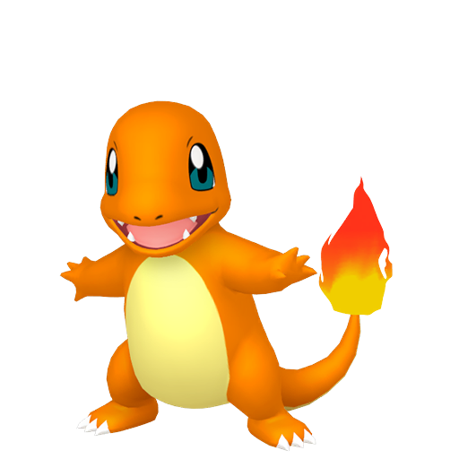

Estos son los primeros Pokemon iniciales de la Region de Kanto
Bulbasaur
Una rara semilla le fue plantada en el lomo al nacer. La planta brota y crece con este Pokémon.
Charmander
La llama de su cola indica la fuerza vital de Charmander. Será brillante si está sano.
Squirtle
Se protege con su caparazón y luego contraataca lanzando agua a presión cuando tiene oportunidad.